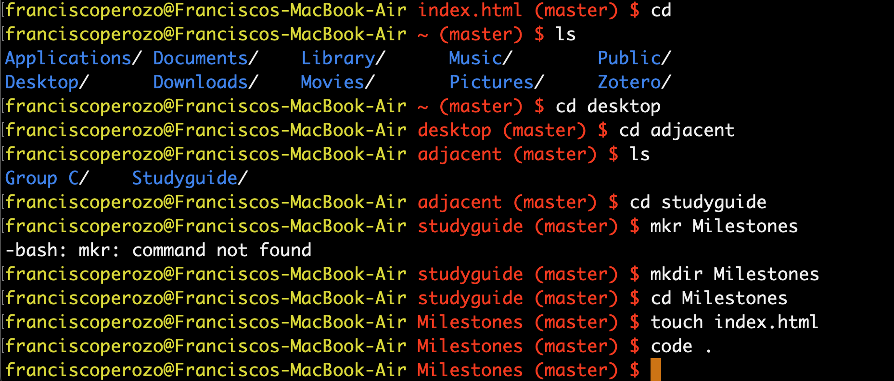
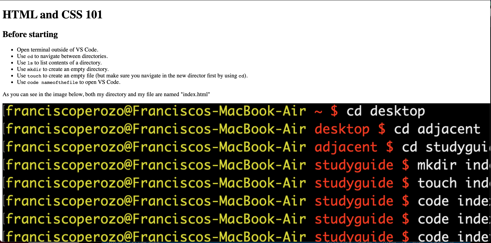

To open the file in your browser, right-click the file and do as it is shown in the picture:

cd to navigate between directories.ls to list contents of a directory.mkdir to create an empty directory.touch to create an empty file (but make sure you navigate in the new director first by using cd).code nameofthefile to open VS Code.As you can see in the image below, both my directory and my file are named "index.html."
To open the file in your browser, right-click the file and do as it is shown in the picture:
It should look like this (without adding any style):
